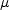
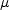

Public Access (formerly Langley Research Center)Turbulence Modeling Resource |
The Chien k-epsilon Turbulence Model
This web page gives detailed information
on the equations for various forms of the
Chien k-epsilon turbulence model.
All forms of the model given on this page are linear eddy viscosity models.
Linear models use the Boussinesq assumption for the constitutive relation:
Unless otherwise stated, for compressible flow with heat transfer this model is implemented as described on the page
Implementing Turbulence Models into the Compressible RANS Equations, with perfect gas
assumed and Pr = 0.72, Prt = 0.90, and Sutherland's law for dynamic viscosity.
Return to: Turbulence Modeling Resource Home Page The first version listed (KE-Chien) is the original published version
of this model.
Chien k-epsilon
Two-Equation Model (KE-Chien)
The reference for this model is:
The two-equation model (written in conservation form) is given by the following:
where
and the turbulent eddy viscosity is computed from:
where There are no specific farfield boundary conditions recommended for this model.
At solid walls, the boundary conditions are:
The constants and auxiliary functions are:
with a non-local function of distance to
the wall (in wall variables), and thus dependent on properties at the nearest wall location.
with U the velocity parallel to the wall, n the direction normal to
the wall, and d the minimum distance to the wall.
Chien k-epsilon
Two-Equation Model with Compressibility Correction (KE-Chien-comp)
A reference for this version of the model is:
This version of the Chien k-epsilon model is the same as for
(KE-Chien) with the exception that the destruction term in the
k-equation has an additional compressibility correction:
where and
a is the local speed of sound
.
Other versions of the Chien k-epsilon model have also made use of a non-local curvature
correction term dependent on the rotational Richardson number, which modifies the
Return to: Turbulence Modeling Resource Home Page
Recent significant updates:

![\frac{\partial (\rho k)}{\partial t} + \frac{\partial (\rho u_j k)}{\partial x_j}
= \cal P - \rho \epsilon + \frac{\partial}{\partial x_j}
\left[\left(\mu + \frac{\mu_t}{\sigma_k} \right)\frac{\partial k}{\partial x_j}\right]
+ \rho L_k](kechien_eqns/img2.png)
![\frac{\partial (\rho \epsilon)}{\partial t} + \frac{\partial (\rho u_j \epsilon)}{\partial x_j}
= C_{\epsilon 1} f_1 \frac{\epsilon}{k} \cal P -
C_{\epsilon 2} f_2 \frac{\rho \epsilon^2}{k} + \frac{\partial}{\partial x_j}
\left[ \left( \mu + \frac{\mu_t}{\sigma_{\epsilon}} \right)
\frac{\partial \epsilon}{\partial x_j} \right] +
\rho L_{\epsilon}](kechien_eqns/img3.png)


 is the density
and
 is the
molecular dynamic viscosity.
is the density
and
 is the
molecular dynamic viscosity.


![\frac{\partial (\rho k)}{\partial t} + \frac{\partial (\rho u_j k)}{\partial x_j}
= \cal P - \rho \epsilon (1 + M_t^2) + \frac{\partial}{\partial x_j}
\left[\left(\mu + \frac{\mu_t}{\sigma_k} \right)\frac{\partial k}{\partial x_j}\right]
+ \rho L_k](kechien-kaul2010_eqns/img2.png)
 term in the
epsilon equation. But because it is not possible to implement this particular curvature correction for general
flows, it is not included here. The interested reader is referred to:
Kaul, NASA CR-4141, 1989.
term in the
epsilon equation. But because it is not possible to implement this particular curvature correction for general
flows, it is not included here. The interested reader is referred to:
Kaul, NASA CR-4141, 1989.
6/30/2015 - mention Pr, Pr_t, and Sutherland's law
Page Curators: Christopher Rumsey,
Ethan Vogel,
Clark Pederson
Last Updated: 11/08/2021